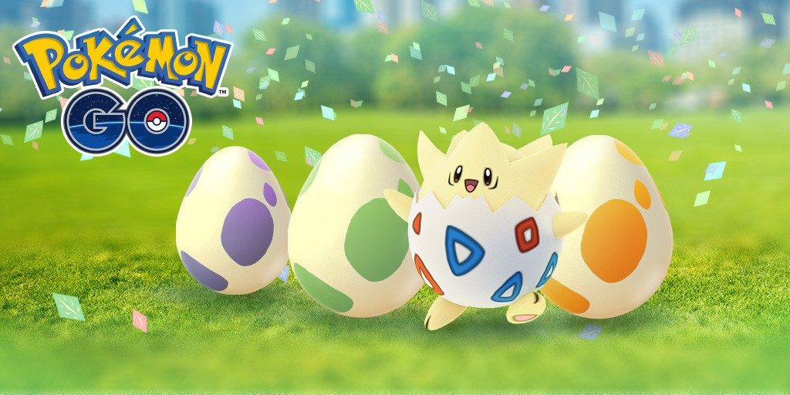
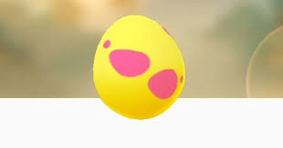
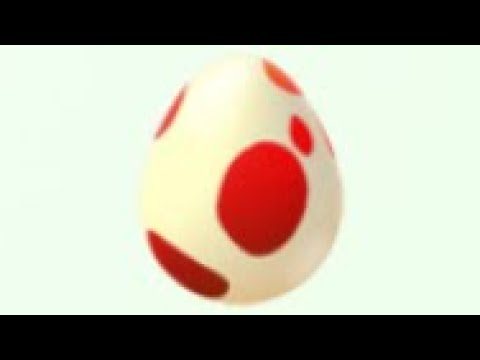
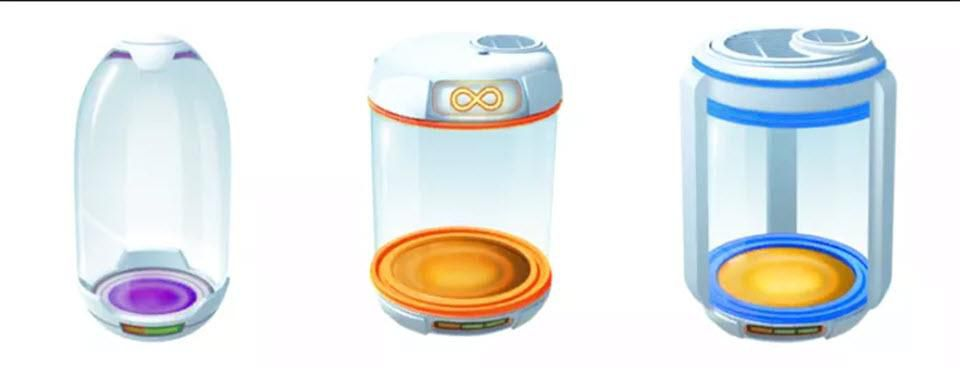

Pokemon GO
Tojások:
Tojások:
-2km
-5km
-7km
-10km
-12km
2km és 10km tojások:

- -zöld=2km
- -sárga=5km
- -lila=10km
- -Ha megpörgetsz posztokat akkor kapod őket
- -Ha elegendő kilométert sétálunk akkor kapunk egy pokemont a tojásból.
7km tojás:

-Akkor kapjuk ha kinyitjuk a barátaink ajándékait
-Különleges "alola" és "galarien" pokemont lehet szerezni
12km tojás:

-Akkor kapjuk a legyőzünk egy team leadert és van szabad tojás helyünk
-Legújabb tojás és új, ritka pokemonok vannak benne
Inkubátorok:

3 féle inkubátor van:
-sárga: végtelen használat
-kék: 3 használat, lefelezi az időt
-lila: 3 használat, leharmadolja az időt